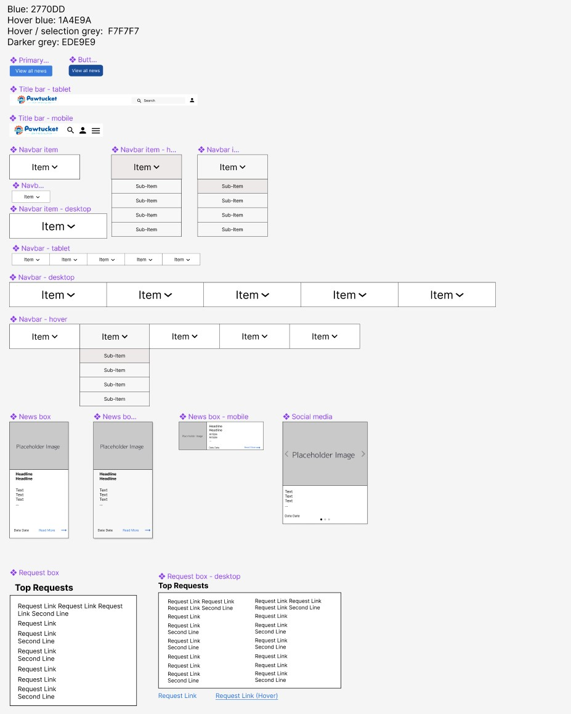

Responsive Redesign: Pawtucket Government Website
An analysis of the Pawtucket government website and a proposed responsive redesign addressing issues found.
Current Website


Problems
Usability
- The "Follow us on ..." social media banner has no links to any social media, which are also not present anywhere else on the page.
- The carousel has no signs to indicate that it is a carousel (like arrows or the selector at the bottom). It initally just appears as an image and then fades in and out, requiring to be swiped to change what's displayed (an action also not indicated).
- Different fonts are used throughout the website with no consistent design language for links and other key elements.
- The "Connect With Us" logo is not clearly indicated as something that must be pressed, and without any caption or obviously identifiable symbol, the user is required to make a greater effort to read the text and understand what it is for.
- The link to view more news is located a long way above the actual news section, which is confusing.
- There are no headings used anywhere, which inhibits the effort to produce a clear visual hierarchy.
- Font sizes do not adjust on resizing, making it difficult to read on smaller screens.
- Efficiency is a problem:
- Something simple and commonly used like "Report a problem" requires scrolling all the way to the bottom of the page to do.
- Other frequent actions (like "Email Log In") are also present at the bottom, increasing the time required to do these actions.
- Important information seems to be displayed on the carousel, which we've seen is confusing to figure out how to use.
Learnability
- Some items may take a little time to get used to, like the carousel at the beginning
- Some commonly used items (like "Report a Problem") may not be in a location people expect due to their popularity, but for specific tasks, it should be easy to remember where they are.
- Finding related tasks may be tricky - due to the lack of clear hierarchy, there may be some issues with navigation or figuring out where things are.
Memorability
- Some things (though inefficient) are easy to remember: e.g. it would be easy to remember to scroll to the bottom each time you needed to report a problem..
- Other things are harder to remember: e.g. a user may not remember that they need to scroll through the carousel to find Covid (or other) information
- Some things may be memorable but may move around on the page: e.g. the new City Hall business hours are on the carousel for now, but may not always be.
Accessibility
- The most common accessibility issue is contrast: WebAIM WAVE detected 46 "Very low contrast errors". This is because the website often pairs light font colours (like a light orangish-red) with light background colours (like light grey), making it difficult to read parts of the page.
- There are also issues with empty headers or empty links. While there are invisible and may not impact an able user, this might be confusing for a user who requires a screen reader to navigate websites.
- Some of the empty links reduce usability for everyone: empty links like Twitter and Facebook should be visible
- There are many redundant link alerts where adjacent links go to the same URL. This may cause some minor confusion for able users and may be much worse for users requiring screen readers, which will repeat the same link many times.
Redesign
Visual design style guide
